1 OVERVIEW
NuMaker-ML56SD는 Nuvoton NuMicro® ML56 시리즈 마이크로컨트롤러용 개발 보드입니다.
ML56 시리즈는 터치 키와 LCD 컨트롤러 기능이 통합된 NuMicro® 8051 시리즈 중 첫 번째 시리즈입니다. 터치 키 컨트롤러는 높은 터치 감도와 높은 잡음 내성으로 IEC 61000-4-6 10Vrms 테스트를 통과했습니다. LCD 컨트롤러는 최대 10cm x 10cm 패널을 구동할 수 있습니다. 그리고 VDD의 전압 변화에 관계없이 안정적인 V LCD를 제공하여 LCD 패널의 우수한 디스플레이 품질을 유지할 수 있는 프로그래밍 가능한 내부 차지 펌프 회로가 내장되어 있습니다. NuMaker-ML56SD 플랫폼은 ML56 평가 보드, 온보드 Nu-Link2-Me 디버거 및 프로그래머, HTN-LCD 패널 모듈의 세 부분으로 구성됩니다. NuMaker-ML56SD는 전력 소비 모니터링 기능을 통해 프로젝트 평가, 프로토타입 개발 및 검증을 위해 설계되었습니다.
ML56 평가 보드는 NuMicro® ML56SD1AE MCU를 기반으로 합니다. 개발 유연성을 위해 ML56 플랫폼은 Arduino UNO 호환 헤더인 ML56SD1AE의 확장 커넥터를 제공하며 다중 전원 공급 장치를 채택할 수 있습니다. 또한 Nuvoton이 설계한 전류계 커넥터는 프로토타입 평가에 필수적인 전력 소비를 즉시 측정할 수 있습니다. 또한 TK0의 정전식 터치 키 감지 기능은 터치 키 하드웨어 설계 규칙, 펌웨어 라이브러리 기능 및 관련 PC 개발 도구에 대한 예입니다. NuMaker-ML56SD는 정전식 터치 키 감지 기능 외에도 8 x 28 COM/SEG LCD 디스플레이 기능을 제공합니다. HTN-LCD 패널을 사용하면 사용자는 ML56SD1AE의 LCD 디스플레이 기능을 쉽게 구현할 수 있습니다. ML56 플랫폼 외에도 온보드 디버거 및 프로그래머 "NuLink2-Me"가 부착되어 있습니다. Nu-Link2-Me는 SWD 인터페이스를 통해 온칩 디버깅, 온라인 및 오프라인 ICP 프로그래밍을 지원합니다. Nu-Link2-Me는 PC에서 디버그 메시지를 인쇄하기 위한 가상 COM(VCOM) 포트를 지원합니다.
게다가 프로그래밍 상태는 내장된 LED에 표시될 수 있습니다. 마지막으로 Nu-Link2-Me는 개발 보드에서 분리되어 독립형 대량 생산 프로그래머가 될 수 있습니다.
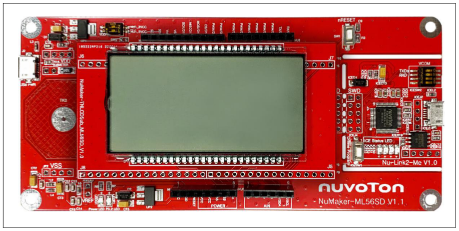
2 FEATURES
- 다음과 호환되는 기능을 갖춘 NuMicro® ML56SD1AE 마이크로컨트롤러:
- ML56LD1AE
- ML56MD1AE
- ML56LC1AE
- ML56TC1AE
- ML56SD1AE full pin extension connectors
- HTN-LCD panel module board can be plugged into extension connectors
- Arduino UNO compatible extension connectors
- 마이크로 컨트롤러의 전력 소비를 측정하기 위한 전류계 커넥터
- Flexible board power source:
- External VDD power connector
- Arduino UNO compatible extension connector Vin
- USB FS connector on ML56 evaluation board
- ICE USB connector on Nu-Link2-Me
- Supports one touch key on board
- 터치 키 1개 + 기준 패드 + 차폐 전극 장착
- 터치 개발 도구는 하드웨어 및 소프트웨어 매개변수를 자동으로 설정할 수 있습니다.
- Supports 8 x 25 COM/SEG HTN-LCD panel on NuMaker-TNLCDSub_ML56SD
- 1/4 바이어스, 1/8 듀티, 8 x 25 COM/SEG
- 온보드 Nu-Link2-Me 디버거 및 프로그래머:
- Debug through SWD interface
- On-line/off-line programming
- Virtual COM port function
3 HARDWARE CONFIGURATION
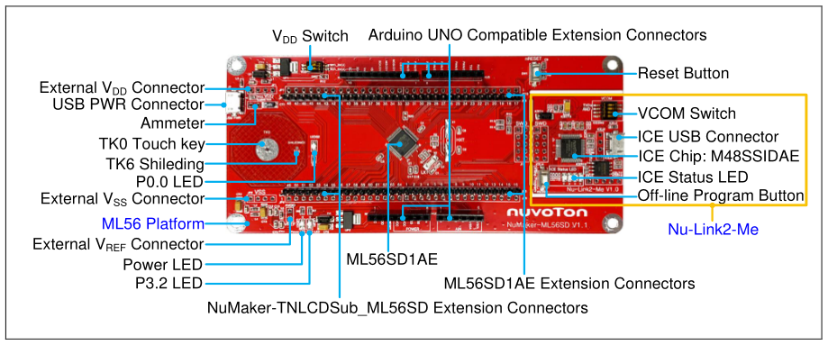
그림 3-1은 NuMaker-ML56SD 전면의 주요 구성 요소와 커넥터를 보여줍니다. 다음은 전면에서 본 구성 요소와 커넥터 목록입니다.
- Target chip:ML56SD1AE (U1)
- USB PWR Connector (J2)
- Arduino UNO 호환 확장 커넥터(NU1, NU2, NU3, NU4)
- ML56 확장 커넥터(JP3, JP4, JP5, JP6, JP7, JP8, JP9 및 JP10)
- NuMaker-TNLCDSub_ML56 확장 커넥터(JP3, JP4, JP5 및 JP6)
- External VDD Power Connector (JP1)
- External VSS Power Connector (JP2)
- External VREF Connector (VREF)
- VDD Switch (SW2)
- Ammeter Connector (AMMETER)
- Reset Button (SW1)
- 전원 LED, P3.2 LED 및 P0.0 LED(LEDG1, LEDR1 및 LEDG2)
- Nu-Link2-Me
- VCOM Switch
- ICE Chip: M48SSIDAE (ICEU2)
- ICE USB Connector (ICEJ3)
- ICE 상태 LED(ICES0, ICES1, ICES2, ICES3)
- Off-line Program Button (ICESW1)
3.2 Rear View
그림 3-2는 NuMaker-ML56SD 후면의 주요 구성 요소와 커넥터를 보여줍니다.
다음은 후면에서 본 구성 요소 및 커넥터 목록입니다.
- Nu-Link2-Me
- MCUVCC Power Switch (ICEJPR1)
- ICEVCC Power Switch (ICEJPR2)
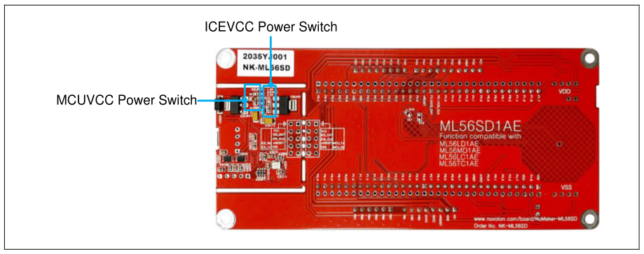
Extension Connectors
3.3 확장 커넥터
표 3-1은 확장 커넥터를 나타냅니다.
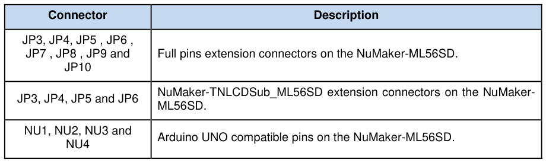
3.3.1 확장 커넥터의 핀 할당
NuMaker-ML56SD는 ML56SD1AE 온보드 및 확장 커넥터(JP3, JP4, JP5 및 JP6)를 제공합니다. 그림 3-3은 ML56SD1AE 확장 커넥터를 보여줍니다.
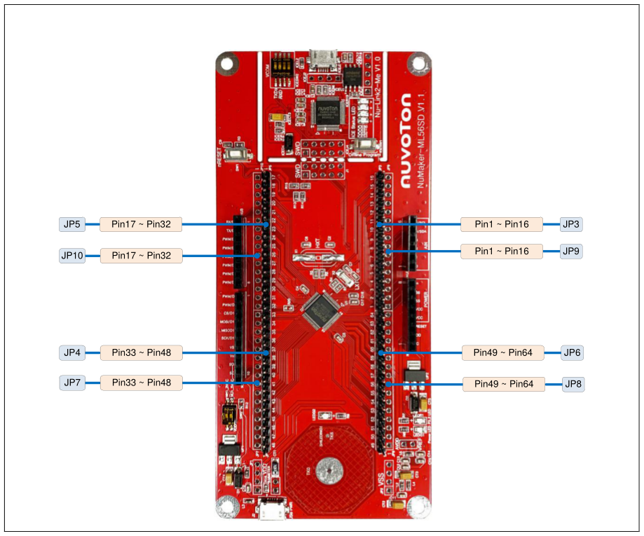
3.3.1 전체 핀 확장 커넥터
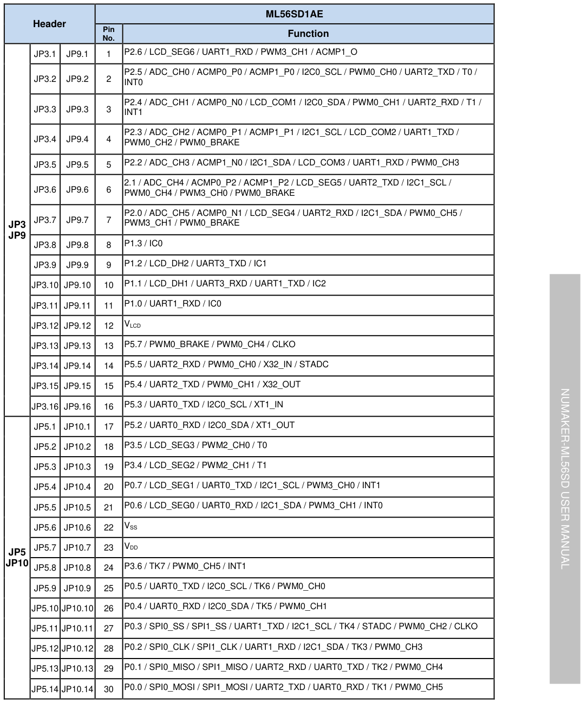
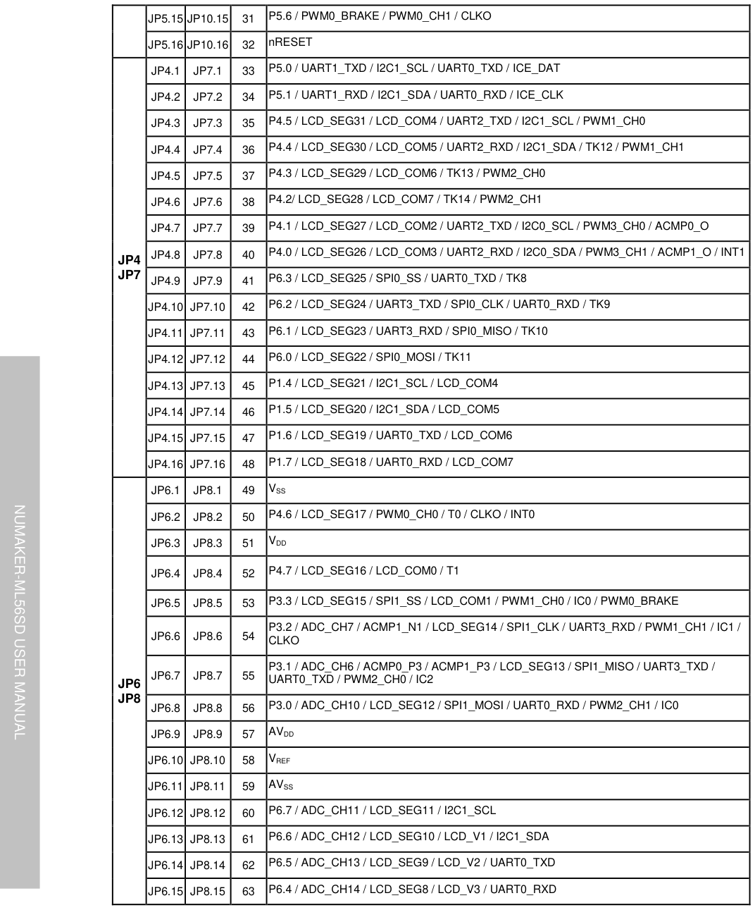
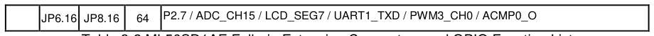
3.3.2 NuMaker-TNLCDSub_ML56SD Compatible Extension Connectors
표 3-3은 NuMaker-TNLCDSub_ML56SD 호환 확장 커넥터를 보여줍니다.
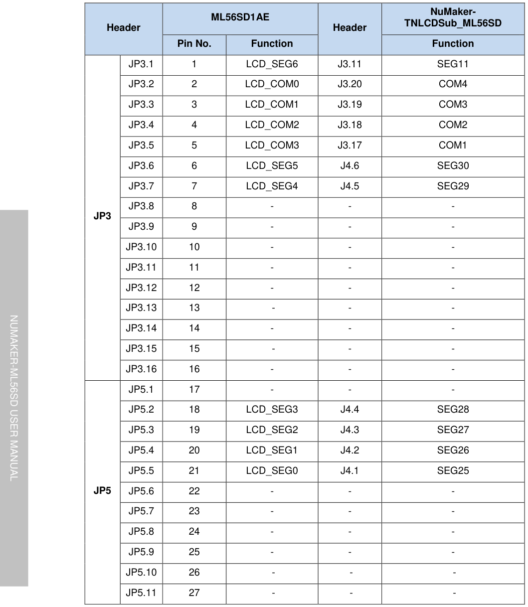
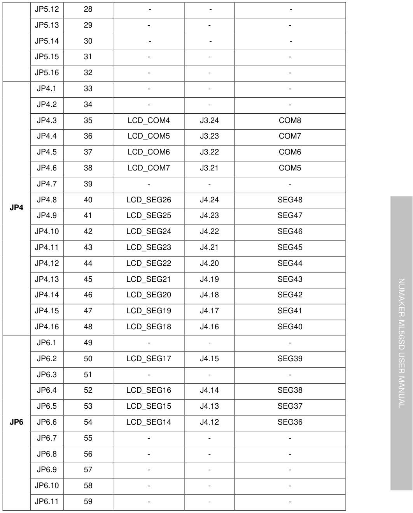
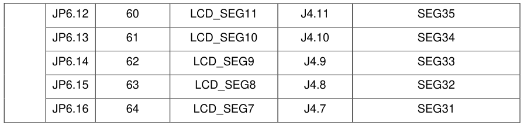
3.3.3 Arduino UNO Compatible Extension Connectors
그림 3-4는 Arduino UNO 호환 확장 커넥터를 보여줍니다.
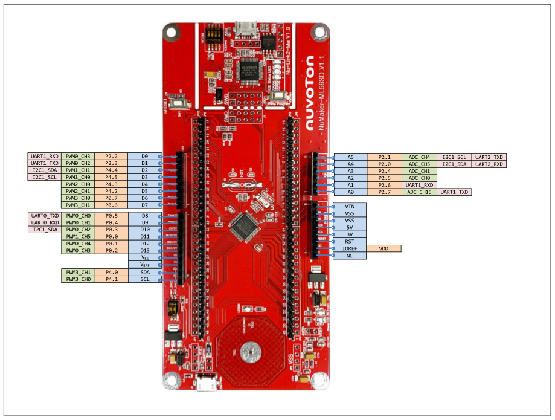
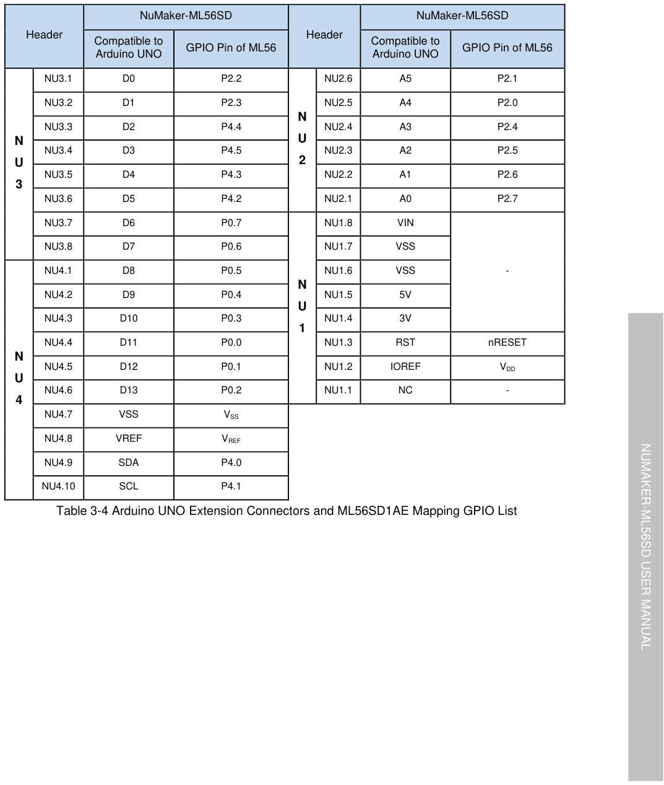
3.4 Power Supply Configuration
NuMaker-ML56SD는 다중 전원 공급 장치를 채택할 수 있습니다. 외부 전원에는 NU1 Vin(7V ~ 12V), VDD(대상 칩 작동 전압에 따라 다름) 및 USB 커넥터를 통한 PC가 포함됩니다. 스위치와 전압 조정기를 사용하면 NuMaker-ML56SD에서 여러 전력 도메인을 생성할 수 있습니다.
3.4.1 VIN Power Source
표 3-5는 Vin 전원 소스를 나타냅니다.
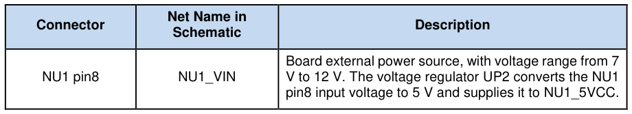
3.4.2 5 V Power Sources
표 3-6은 5V 전원 소스를 나타냅니다.
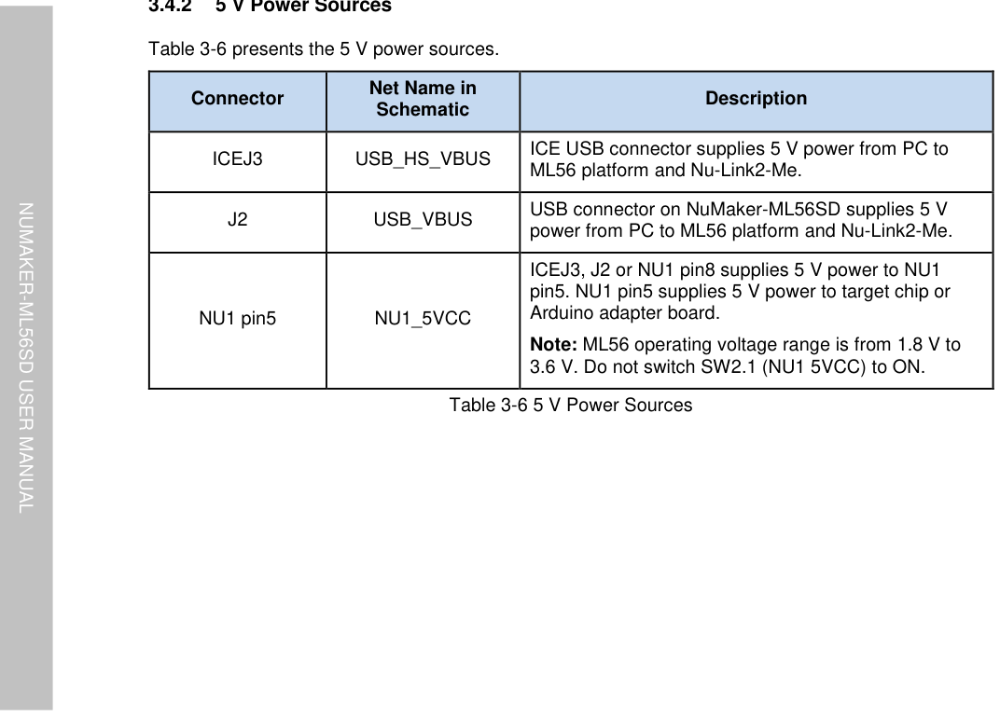
3.4.3 3.3 V Power Sources
표 3-7은 3.3V 전원 소스를 나타냅니다.
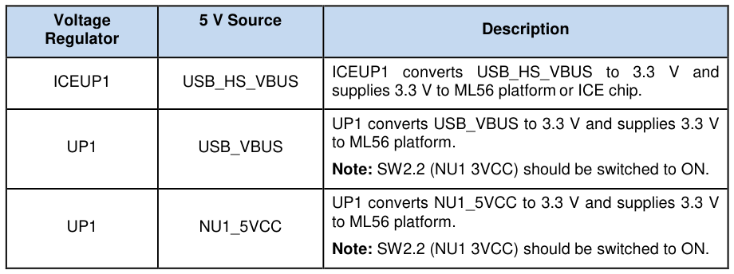
3.4.4 1.8 V Power Sources
표 3-8은 1.8V 전원 소스를 나타냅니다.
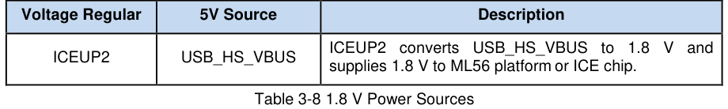
3.4.5 Power Connectors
표 3-9는 전원 커넥터를 나타냅니다.
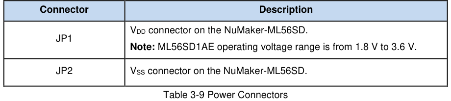
3.4.6 USB Connectors
표 3-10은 USB 커넥터를 나타냅니다.
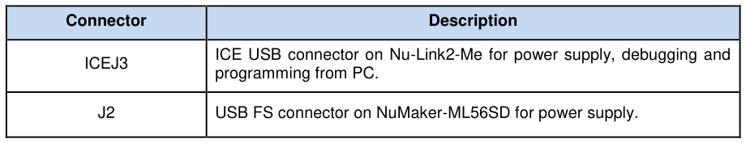
3.4.7 Power Switches
표 3-11은 전원 스위치를 나타냅니다.
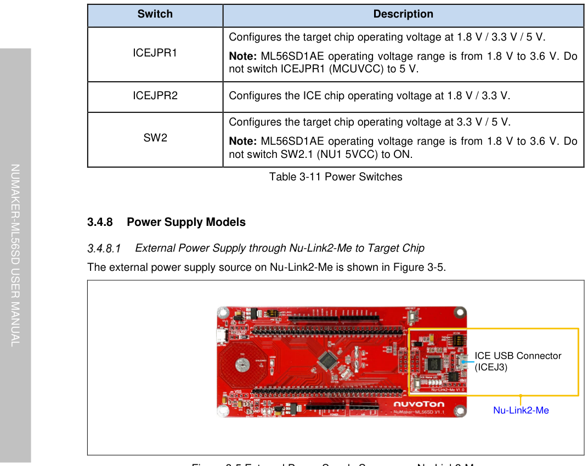
3.4.8.1 Nu-Link2-Me를 통해 대상 칩에 외부 전원 공급
Nu-Link2-Me의 외부 전원 공급 장치는 그림 3-5에 나와 있습니다.
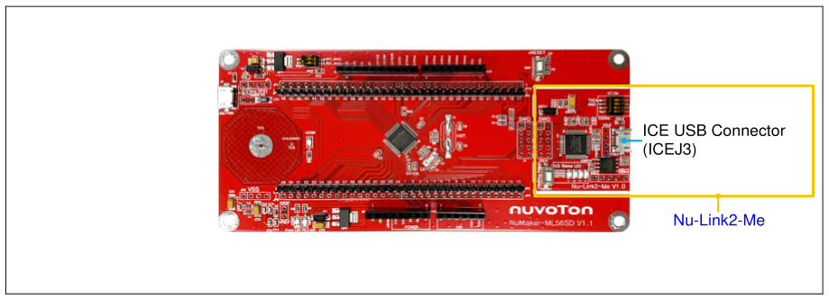
Nu-Link2-Me와 함께 ICEJ3를 외부 전원 공급 장치로 사용하려면 아래 단계를 따르십시오.
- 대상 칩 작동 전압에 따라 ICEJPR1(MCUVCC)에 저항기를 납땜합니다.
- ICEJPR2(ICEVCC)의 저항기를 납땜하는 것은 ICE 칩 작동 전압에 따라 다릅니다.
- SW2를 OFF로 전환합니다.
- 외부 전원 공급 장치를 ICEJ3에 연결합니다.
표 3-12는 Nu-Link2-Me를 통해 외부 전원을 공급할 때의 모든 전원 모델을 나타냅니다. Nu-Link2-Me 외부 전원 소스는 노란색으로 강조되어 있습니다.
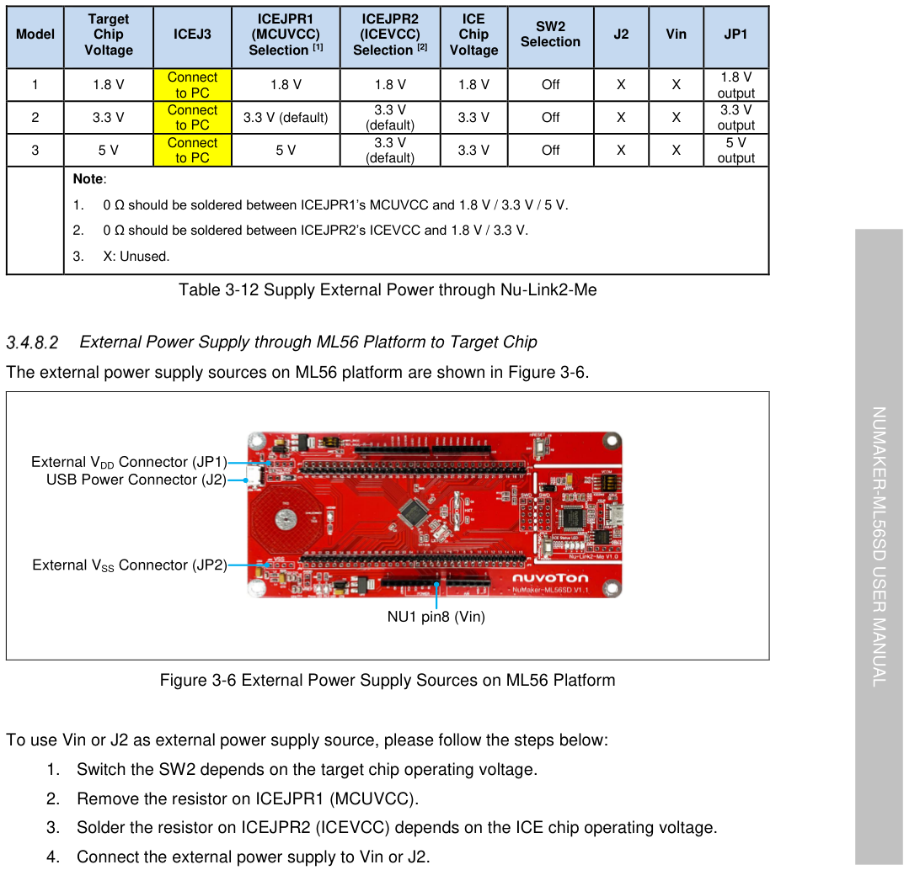
3.4.8.2 ML56 플랫폼을 통해 대상 칩에 외부 전원 공급
ML56 플랫폼의 외부 전원 공급 장치는 그림 3-6에 나와 있습니다.
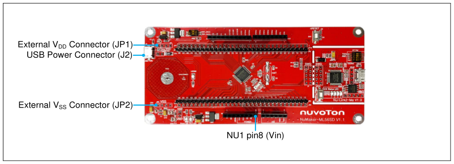
Vin 또는 J2를 외부 전원 공급 소스로 사용하려면 아래 단계를 따르십시오.
- 대상 칩 작동 전압에 따라 SW2를 전환합니다.
- ICEJPR1(MCUVCC)에서 저항기를 제거합니다.
- ICEJPR2(ICEVCC)에 저항기를 납땜하면 ICE 칩 작동 전압에 따라 달라집니다.
- 외부 전원 공급 장치를 Vin 또는 J2에 연결합니다.
3.4.8.2 외부 전원 공급 계속
JP1을 외부 전원 공급 소스로 사용하려면 아래 단계를 따르십시오.
- SW2를 OFF로 전환합니다.
- ICEJPR1(MCUVCC)에서 저항기를 제거합니다.
- ICEJPR2(ICEVCC)에 저항기를 납땜하면 ICE 칩 작동 전압에 따라 달라집니다.
- ICEJ3를 PC에 연결합니다.
- 외부 전원 공급 장치를 JP1에 연결합니다.
NuMaker-ML56SD에서 분리된 Nu-Link2-Me를 사용하여 Vin 또는 J2를 외부 전원 공급 장치로 사용하려면 아래 단계를 따르십시오.
- 대상 칩 작동 전압에 따라 SW2를 전환합니다.
- NuMaker-ML56SD에서 Nu-Link2-Me를 분리합니다.
- 외부 전원 공급 장치를 Vin 또는 J2에 연결합니다.
NuMaker-ML56SD에서 분리된 Nu-Link2-Me를 사용하여 JP1을 외부 전원 공급 장치로 사용하려면 다음 단계를 따르십시오.
- SW2를 OFF로 전환합니다.
- NuMaker-ML56SD에서 Nu-Link2-Me를 분리합니다.
- 외부 전원 공급 장치를 JP1에 연결합니다.
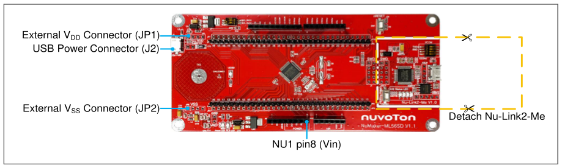
표 3-13은 ML56 플랫폼을 통해 외부 전원을 공급할 때의 모든 전원 모델을 나타냅니다. ML56 플랫폼 외부 전원 소스는 노란색으로 강조되어 있습니다.
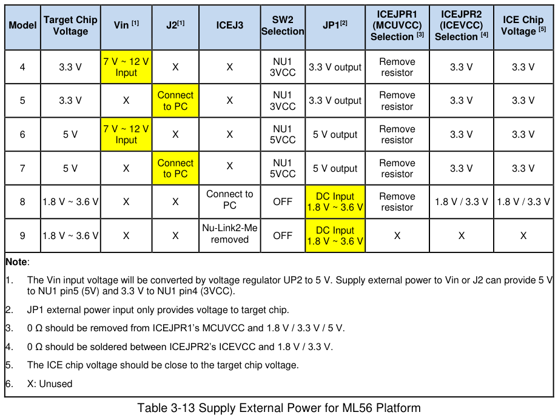
3.5 External Reference Voltage Connector
표 3-14는 외부 기준 전압 커넥터를 나타냅니다.
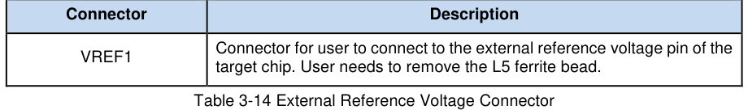
3.6 Ammeter Connector
표 3-15는 전류계 커넥터를 나타냅니다.
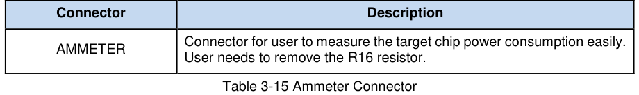
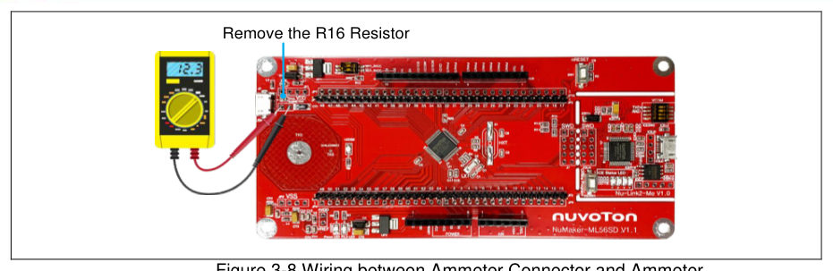
3.7 Push Buttons
표 3-16은 푸시 버튼을 나타냅니다.
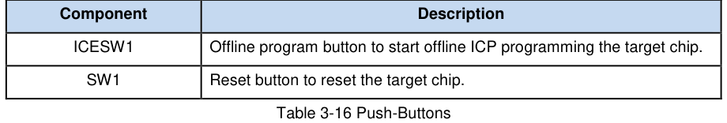
3.8 LEDs
표 3-17은 LED를 나타냅니다.
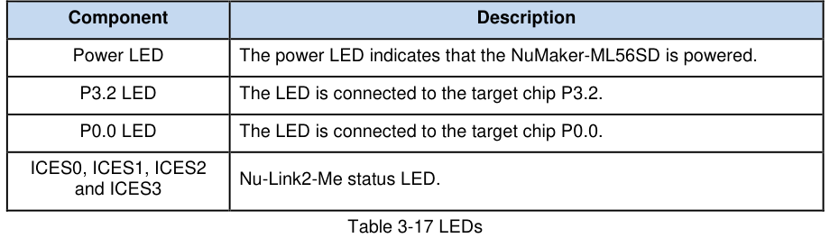
3.9 Touch Key
표 3-18은 터치 키를 나타냅니다.
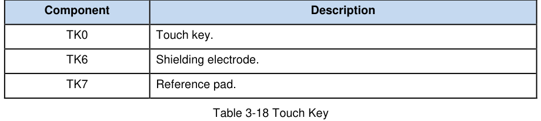
3.10 LCD
LCD
8 x 40 COM/SEG를 갖춘 NuMaker-ML56SD의 LCD. LCD는 시간, 배터리 상태, 온도, 습도 등과 같은 일부 정보를 제공합니다. LCD는 TRICOMTEK 부품 번호 RHE6616TP01의 것입니다. 그림 3-9는 LCD 숫자 세그먼트 매핑 테이블을 보여줍니다. 표 3-20은 LCD의 핀 맵을 보여줍니다.
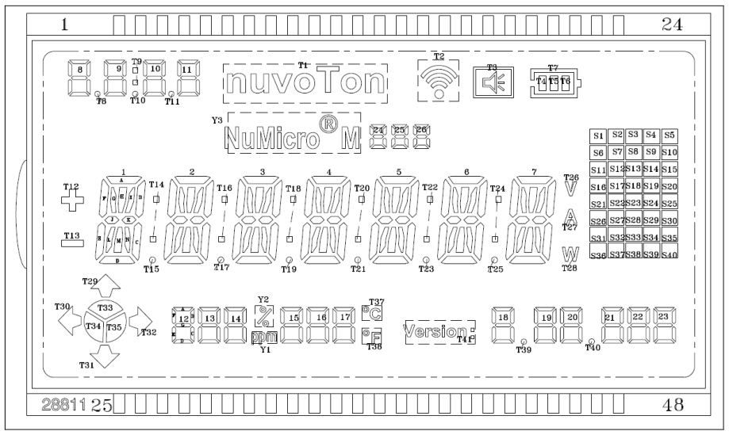
LCD와 NuMaker-ML56SD의 COM 핀과 SEG 핀 할당은 표 3-3과 같습니다.
표 3-19는 LCD 사양을 나타냅니다.
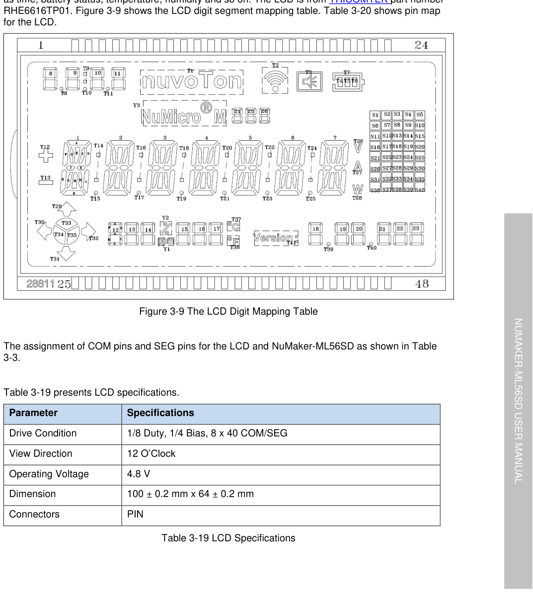
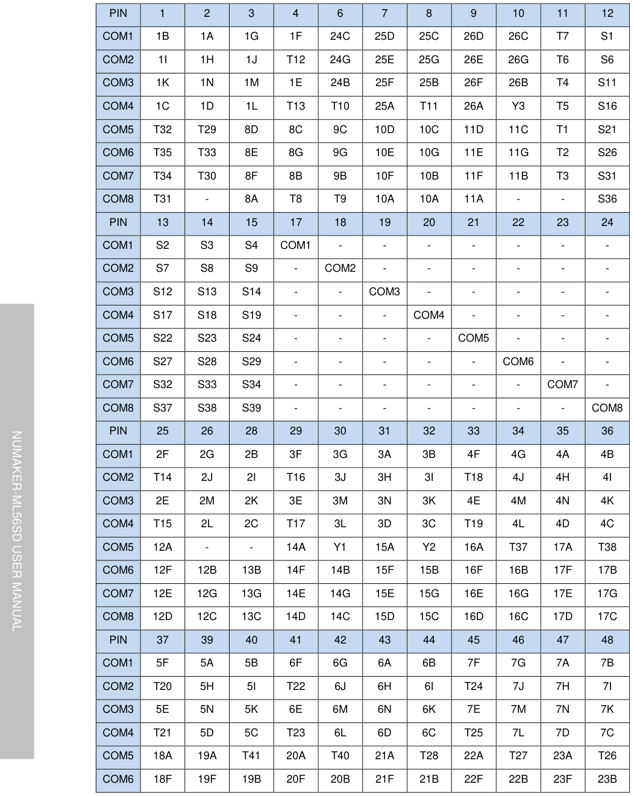
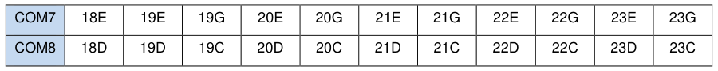
3.11 Nu-Link2-Me
Nu-Link2-Me는 부착된 온보드 디버거 및 프로그래머입니다. Nu-Link2-Me는 SWD 인터페이스를 통해 온칩 디버깅, 온라인 및 오프라인 ICP 프로그래밍을 지원합니다. Nu-Link2-Me는 PC에서 디버그 메시지를 인쇄하기 위한 가상 COM 포트(VCOM)도 지원합니다. 게다가 프로그래밍 상태는 내장된 LED에 표시될 수 있습니다. 마지막으로 Nu-Link2-Me는 개발 보드에서 분리되어 독립형 대량 생산 프로그래머가 될 수 있습니다. Nu-Link2-Me에 대한 자세한 내용은 Nu-Link2-Pro 디버거 및 프로그래머 사용자 설명서를 참조하세요.
3.11.1 VCOM Switches
표 3-21은 ICESW2로 VCOM 기능을 설정하는 방법을 나타냅니다.
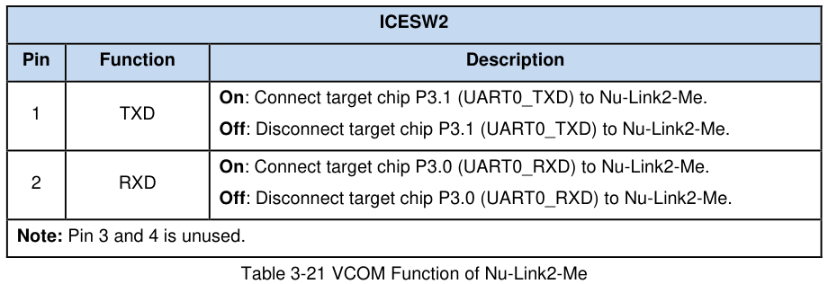
3.11.2 Status LEDs
표 3-22는 Nu-Link2-Me의 동작별 상태 LED 패턴을 나타냅니다.
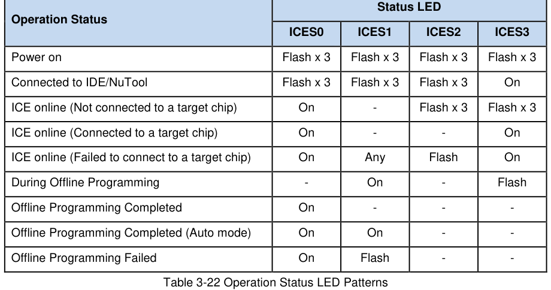
4 QUICK START
4.1 Toolchains Supporting
선호하는 툴체인을 설치하십시오. 툴체인 중 하나 이상이 설치되어 있는지 확인하십시오.
- KEIL C51
- IAR EW8051
4.2 Nuvoton Nu-Link Driver Installation
최신 Nuvoton Nu-Link 드라이버를 다운로드하여 설치하세요.
- Keil C51 사용 시 Nu-Link_Keil_Driver를 다운로드하여 설치하세요.
- IAR EW8051 사용 시 Nu-Link_IAR_Driver를 다운로드하여 설치하세요.
설치가 끝나면 Nu-Link USB 드라이버도 함께 설치하세요. 설치는 그림 4-1과 그림 4-2에 나와 있습니다.
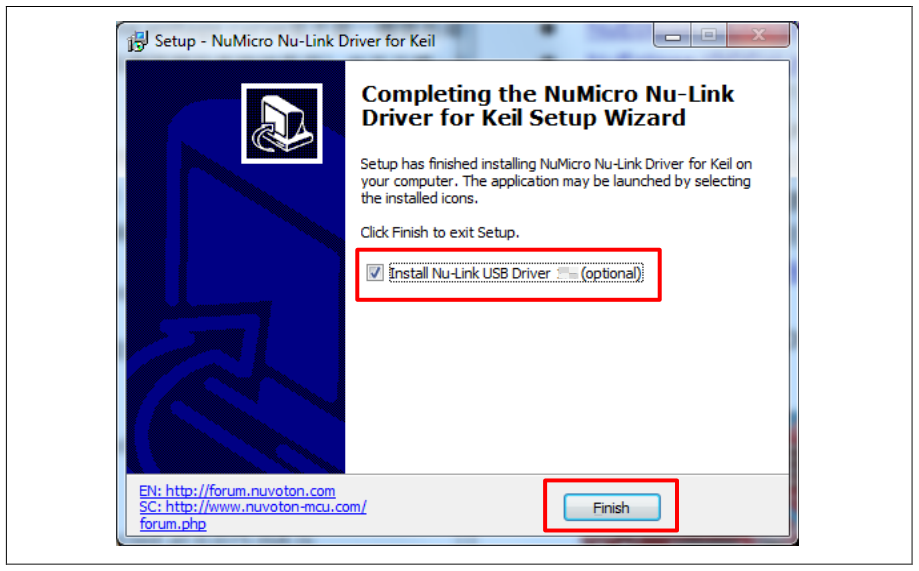
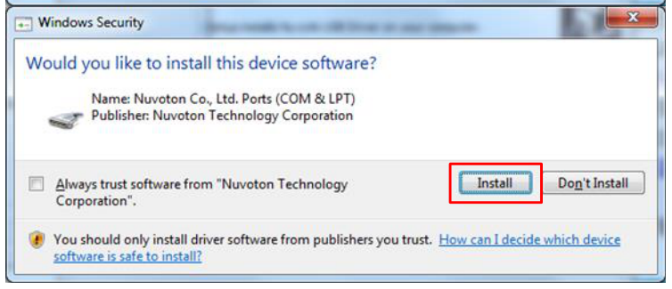
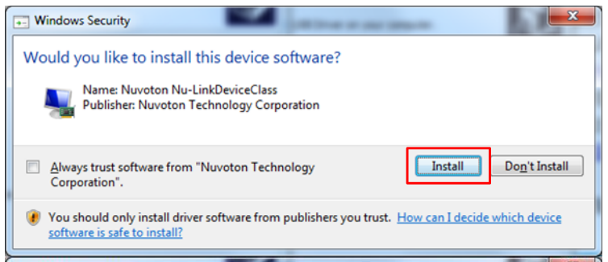
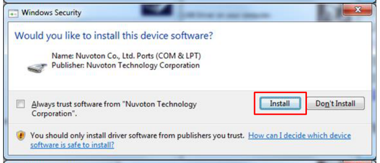
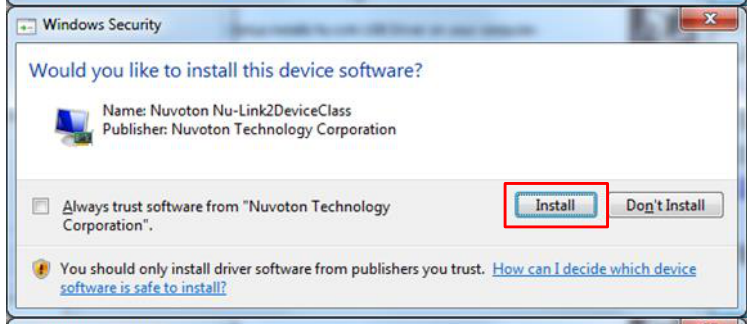
4.3 BSP Firmware Download
보드 지원 패키지(BSP) 를 다운로드하고 압축을 풉니다.
4.4 Hardware Setup
1. Nu-Link2-Me VCOM 스위치 1번과 2번을 ON으로 변경하여 가상 COM(VCOM) 기능을 엽니다.
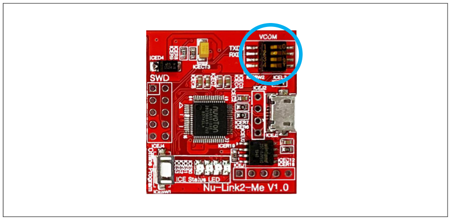
2. 그림 4-4에 표시된 ICE USB 커넥터를 USB 케이블을 통해 PC USB 포트에 연결합니다.
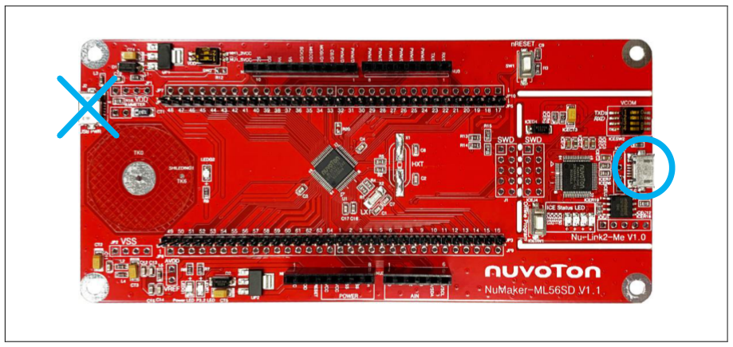
3. 그림 4-5와 같이 장치 관리자에서 "Nuvoton Virtual COM Port"를 찾습니다.
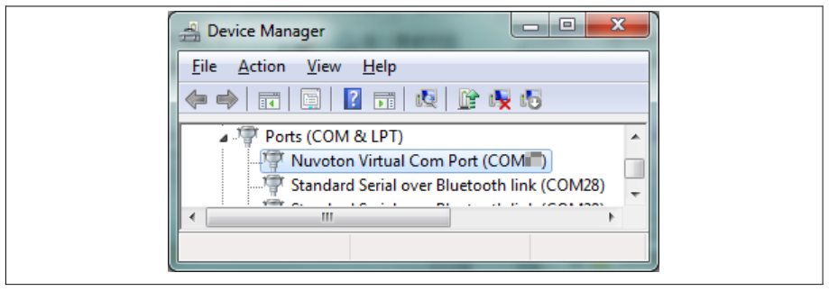
4. 디버그 메시지를 인쇄하려면 PuTTY와 같은 직렬 포트 터미널을 엽니다. 속도를 115200으로 설정합니다. 그림 4-6은 PuTTY 세션 설정을 보여줍니다.
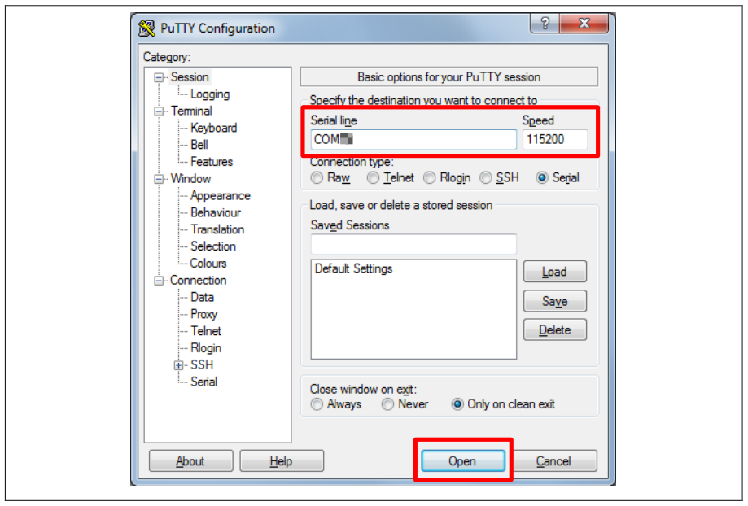
4.5 예제 프로젝트 찾기
"템플릿" 프로젝트를 예로 사용하세요. 프로젝트는 그림 4-7과 같이 BSP 폴더 아래에서 찾을 수 있습니다.
4.6 툴체인에서 프로젝트 실행
툴체인에서 프로젝트를 열고 실행합니다. 섹션 4.6.1과 4.6.2는 각각 Keil C51과 IAR EW8051에서 프로젝트를 실행하는 단계를 설명합니다.
4.6.1 Keil C51
이 섹션에서는 초보자에게 Keil C51을 사용하여 프로젝트를 실행하는 방법에 대한 단계를 제공합니다.
1. "Template.uvproj"를 두 번 클릭하여 프로젝트를 엽니다.
참고: 그림 4-8 경고 메시지가 튀어나오면 그림 4-9와 같이 버전 5 형식으로 마이그레이션하십시오. ".uvproj" 파일 이름 확장자는 ".uvprojx"로 변경됩니다.
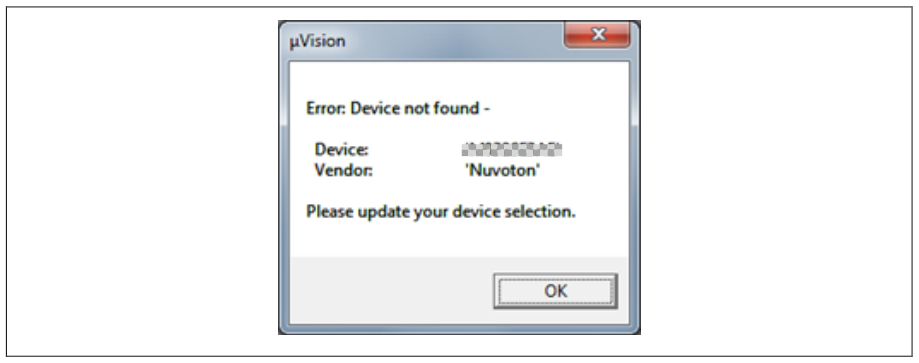
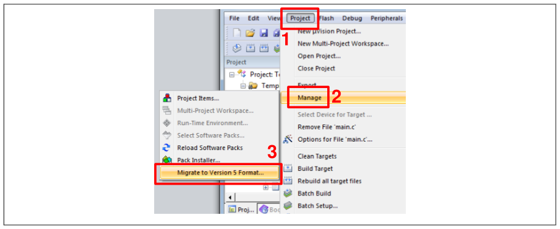
2. 그림 4-10 및 그림 4-11에 표시된 대로 디버거가 "Nuvoton Nu-Link Debugger"인지 확인하십시오.
참고: 그림 4-10의 드롭다운 메뉴에 "Nuvoton Nu-Link Debugger" 항목이 없으면 섹션 4.2를 다시 작업하십시오.
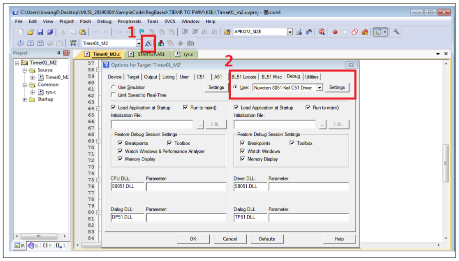
4.6.1 Keil C51 계속
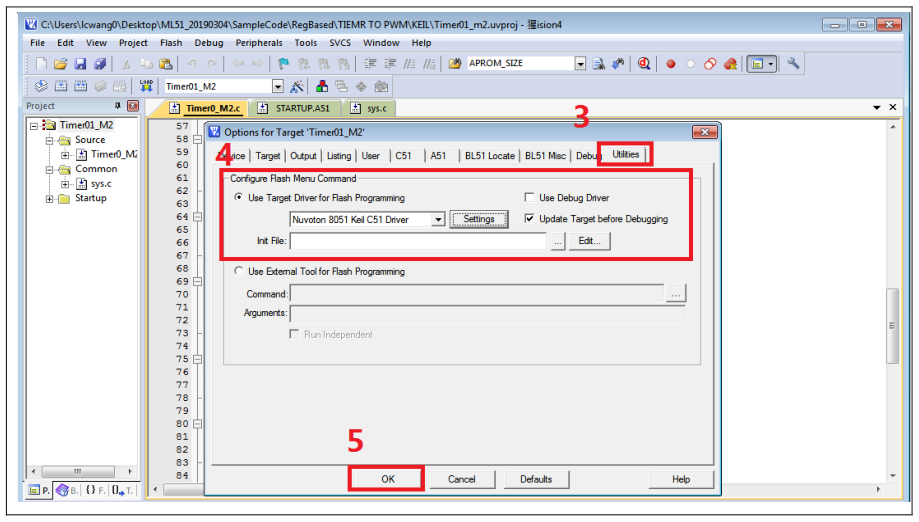
3. 모든 대상 파일을 다시 빌드합니다. 프로젝트를 성공적으로 컴파일한 후 코드를 플래시 메모리에 다운로드합니다.
"디버그 섹션 시작/중지" 버튼을 클릭하면 디버그 모드로 들어갈 수 있습니다.
4. 그림 4-13은 Keil C51의 디버그 모드를 보여줍니다. "실행"을 클릭하면 디버그 메시지가 나타납니다.
4.6.1 Keil C51 디버그
그림 4-14와 같이 인쇄됩니다. 사용자는 소스 코드, 어셈블리 언어, 주변 장치의 레지스터를 확인하고 중단점, 단계 실행, 값 모니터 등을 설정하여 디버그 모드에서 프로젝트를 디버깅할 수 있습니다.
4.6.2 IAR EW8051
이 섹션에서는 초보자에게 IAR EW8051을 사용하여 프로젝트를 실행하는 방법에 대한 단계를 제공합니다.
1. "Template.eww"를 두 번 클릭하여 프로젝트를 엽니다.
2. 그림 4-15와 같이 도구 모음에 "Nu-Link" 항목이 포함되어 있는지 확인하십시오.
참고: 도구 모음에 "Nu-Link" 항목이 포함되어 있지 않으면 섹션 4.2를 다시 작업하십시오.
3. 그림 4-16과 같이 대상 파일을 만듭니다. 프로젝트를 성공적으로 컴파일한 후 코드를 플래시 메모리에 다운로드하고 디버그 모드로 들어갑니다.
4.6.2 IAR EW8051 디버그
4. 그림 4-17은 IAR EW8051의 디버그 모드를 보여줍니다. "이동"을 클릭하면 그림 4-18과 같이 디버그 메시지가 인쇄됩니다. 사용자는 소스 코드, 어셈블리 언어, 주변 장치의 레지스터를 확인하고 중단점, 단계 실행, 값 모니터 등을 설정하여 디버그 모드에서 프로젝트를 디버깅할 수 있습니다.
5.1 Nu-Link2-Me
그림 5-1은 Nu-Link2-Me 회로를 보여줍니다.
5.2 ML56 플랫폼
그림 5-2는 ML56 플랫폼 회로를 보여줍니다.
5.3 확장 커넥터
그림 5-3은 NuMaker-ML56SD의 확장 커넥터 회로를 보여줍니다.
5.4 TK 및 LCD Cap
그림 5-4는 NuMaker-ML56SD의 터치 키 및 LCD Cap 회로를 보여줍니다.